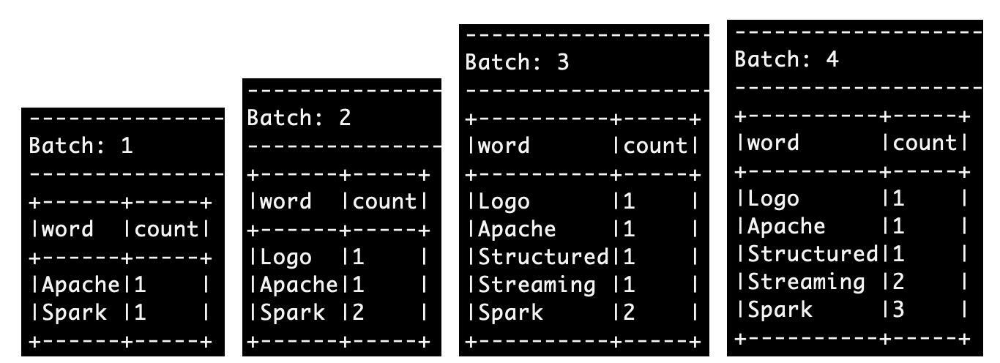

- 00 开篇词 入门Spark，你需要学会“三步走”.md.html
- 01 Spark：从“大数据的Hello World”开始.md.html
- 02 RDD与编程模型：延迟计算是怎么回事？.md.html
- 03 RDD常用算子（一）：RDD内部的数据转换.md.html
- 04 进程模型与分布式部署：分布式计算是怎么回事？.md.html
- 05 调度系统：如何把握分布式计算的精髓？.md.html
- 06 Shuffle管理：为什么Shuffle是性能瓶颈？.md.html
- 07 RDD常用算子（二）：Spark如何实现数据聚合？.md.html
- 08 内存管理：Spark如何使用内存？.md.html
- 09 RDD常用算子（三）：数据的准备、重分布与持久化.md.html
- 10 广播变量 & 累加器：共享变量是用来做什么的？.md.html
- 11 存储系统：数据到底都存哪儿了？.md.html
- 12 基础配置详解：哪些参数会影响应用程序稳定性？.md.html
- 13 Spark SQL：让我们从“小汽车摇号分析”开始.md.html
- 14 台前幕后：DataFrame与Spark SQL的由来.md.html
- 15 数据源与数据格式：DataFrame从何而来？.md.html
- 16 数据转换：如何在DataFrame之上做数据处理？.md.html
- 17 数据关联：不同的关联形式与实现机制该怎么选？.md.html
- 18 数据关联优化：都有哪些Join策略，开发者该如何取舍？.md.html
- 19 配置项详解：哪些参数会影响应用程序执行性能？.md.html
- 20 Hive + Spark强强联合：分布式数仓的不二之选.md.html
- 21 Spark UI（上）：如何高效地定位性能问题？.md.html
- 22 Spark UI（下）：如何高效地定位性能问题？.md.html
- 23 Spark MLlib：从“房价预测”开始.md.html
- 24 特征工程（上）：有哪些常用的特征处理函数？.md.html
- 25 特征工程（下）：有哪些常用的特征处理函数？.md.html
- 26 模型训练（上）：决策树系列算法详解.md.html
- 27 模型训练（中）：回归、分类和聚类算法详解.md.html
- 28 模型训练（下）：协同过滤与频繁项集算法详解.md.html
- 29 Spark MLlib Pipeline：高效开发机器学习应用.md.html
- 30 Structured Streaming：从“流动的Word Count”开始.md.html
- 31 新一代流处理框架：Batch mode和Continuous mode哪家强？.md.html
- 32 Window操作&Watermark：流处理引擎提供了哪些优秀机制？.md.html
- 33 流计算中的数据关联：流与流、流与批.md.html
- 34 Spark + Kafka：流计算中的“万金油”.md.html
- 用户故事 小王：保持空杯心态，不做井底之蛙.md.html
- 结束语 进入时间裂缝，持续学习.md.html
- 捐赠
30 Structured Streaming：从“流动的Word Count”开始
你好，我是吴磊。
从今天这一讲开始，我们将进入流计算的学习模块。与以往任何时候都不同，今天的大数据处理，对于延迟性的要求越来越高，因此流处理的基本概念与工作原理，是每一个大数据从业者必备的“技能点”。
在这个模块中，按照惯例，我们还是从一个可以迅速上手的实例开始，带你初步认识Spark的流处理框架Structured Streaming。然后，我们再从框架所提供的能力、特性出发，深入介绍Structured Streaming工作原理、最佳实践以及开发注意事项，等等。
在专栏的第一个模块，我们一直围绕着Word Count在打转，也就是通过从文件读取内容，然后以批处理的形式，来学习各式各样的数据处理技巧。而今天这一讲我们换个花样，从一个“流动的Word Count”入手，去学习一下在流计算的框架下，Word Count是怎么做的。
环境准备
要上手今天的实例，你只需要拥有Spark本地环境即可，并不需要分布式的物理集群。
不过，咱们需要以“流”的形式，为Spark提供输入数据，因此，要完成今天的实验，我们需要开启两个命令行终端。一个用于启动spark-shell，另一个用于开启Socket端口并输入数据，如下图所示。
流动的Word Count
环境准备好之后，接下来，我们具体来说一说，什么是“流动的Word Count”。
所谓没有对比就没有鉴别，为了说清楚“流动的Word Count”，咱们不妨拿批处理版本的Word Count作对比。在之前的Word Count中，数据以文件（wikiOfSpark.txt）的形式，一次性地“喂给”Spark，从而触发一次Job计算。而在“流动的Word Count”里，数据以行为粒度，分批地“喂给”Spark，每一行数据，都会触发一次Job计算。
具体来说，我们使用netcat工具，向本地9999端口的Socket地址发送数据行。而Spark流处理应用，则时刻监听着本机的9999端口，一旦接收到数据条目，就会立即触发计算逻辑的执行。当然，在我们的示例中，这里的计算逻辑，就是Word Count。计算执行完毕之后，流处理应用再把结果打印到终端（Console）上。
与批处理不同，只要我们不人为地中断流处理应用，理论上它可以一直运行到永远。以“流动的Word Count”为例，只要我们不强制中断它，它就可以一直监听9999端口，接收来自那里的数据，并以实时的方式处理它。
好啦，弄清楚我们要做的事情之后，接下来，我们一起来一步一步地实现它。
首先第一步，我们在第二个用来输入数据的终端敲入命令“nc -lk 9999”，也就是使用netcat工具，开启本机9999端口的Socket地址。一般来说，大多数操作系统都预装了netcat工具，因此，不论你使用什么操作系统，应该都可以成功执行上述命令。
命令敲击完毕之后，光标会在屏幕上一直闪烁，这表明操作系统在等待我们向Socket地址发送数据。我们暂且把它搁置在这里，等一会流处理应用实现完成之后，再来处理它。
接下来第二步，我们从第一个终端进入spark-shell本地环境，然后开始开发流处理应用。首先，我们先导入DataFrame，并指定应用所需监听的主机与端口号。
import org.apache.spark.sql.DataFrame
// 设置需要监听的本机地址与端口号
val host: String = "127.0.0.1"
val port: String = "9999"
数据加载
然后是数据加载环节，我们通过SparkSession的readStream API来创建DataFrame。
// 从监听地址创建DataFrame
var df: DataFrame = spark.readStream
.format("socket")
.option("host", host)
.option("port", port)
.load()
仔细观察上面的代码，你有没有觉得特别眼熟呢？没错，readStream API，与SparkSession的read API看上去几乎一模一样。
可以看到，与read API类似，readStream API也由3类最基本的要素构成，也就是：
- format：指定流处理的数据源头类型
- option：与数据源头有关的若干选项
- load：将数据流加载进Spark
流计算场景中，有3个重要的基础概念，需要我们重点掌握。它们依次是Source、流处理引擎与Sink。其中，Source是流计算的数据源头，也就是源源不断地产生数据的地方。与之对应，Sink指的是数据流向的目的地，也就是数据要去向的地方，后面我们讲到writeSteam API的时候，再去展开。
而流处理引擎是整个模块的学习重点，后续我们还会深入讨论。它的作用显而易见：在数据流动过程中实现数据处理，保证数据完整性与一致性。这里的数据处理，包括我们Spark SQL模块讲过的各种操作类型，比如过滤、投影、分组、聚合、排序，等等。
现在，让我们先把注意力放到readStream API与Source上来。通过readStream API的format函数，我们可以指定不同类型的数据源头。在Structured Streaming框架下，Spark主要支持3类数据源，分别是Socket、File和Kafka。
其中，Socket类型主要用于开发试验或是测试应用的连通性，这也是这一讲中我们采用Socket作为数据源的原因。File指的是文件系统，Spark可以通过监听文件夹，把流入文件夹的文件当作数据流来对待。而在实际的工业级应用中，Kafka + Spark的组合最为常见，因此在本模块的最后，我们会单独开辟一篇，专门讲解Kafka与Spark集成的最佳实践。
通过format指定完数据源之后，还需要使用零到多个option，来指定数据源的具体地址、访问权限等信息。以咱们代码中的Socket为例，我们需要明确主机地址与端口地址。
// 从监听地址创建DataFrame
var df: DataFrame = spark.readStream
.format("socket")
.option("host", host)
.option("port", port)
.load()
一切准备就绪之后，我们就可以通过load，来创建DataFrame，从而把数据流源源不断地加载进Spark系统。
数据处理
有了DataFrame在手，我们就可以使用之前学习过的各类DataFrame算子，去实现Word Count的计算逻辑。这一步比较简单，你不妨先自己动手试试，然后再接着往下看。
/**
使用DataFrame API完成Word Count计算
*/
// 首先把接收到的字符串，以空格为分隔符做拆分，得到单词数组words
df = df.withColumn("words", split($"value", " "))
// 把数组words展平为单词word
.withColumn("word", explode($"words"))
// 以单词word为Key做分组
.groupBy("word")
// 分组计数
.count()
首先，需要说明的是，我们从Socket创建的DataFrame，默认只有一个“value”列，它以行为粒度，存储着从Socket接收到数据流。比方说，我们在第二个终端（也就是netcat界面），敲入两行数据，分别是“Apache Spark”和“Spark Logo”。那么在“value”列中，就会有两行数据与之对应，同样是“Apache Spark”和“Spark Logo”。
对于“value”列，我们先是用空格把它拆分为数组words，然后再用explode把words展平为单词word，接下来就是对单词word做分组计数。这部分处理逻辑比较简单，你很容易就可以上手，鼓励你尝试其他不同的算子，来实现同样的逻辑。
数据输出
数据处理完毕之后，与readStream API相对应，我们可以调用writeStream API来把处理结果写入到Sink中。在Structured Streaming框架下，Spark支持多种Sink类型，其中有Console、File、Kafka和Foreach(Batch)。对于这几种Sink的差异与特点，我们留到[下一讲]再去展开。
这里我们先来说说Console，Console就是我们常说的终端，选择Console作为Sink，Spark会把结果打印到终端。因此，Console往往与Socket配合，用于开发实验与测试连通性，代码实现如下所示。
/**
将Word Count结果写入到终端（Console）
*/
df.writeStream
// 指定Sink为终端（Console）
.format("console")
// 指定输出选项
.option("truncate", false)
// 指定输出模式
.outputMode("complete")
//.outputMode("update")
// 启动流处理应用
.start()
// 等待中断指令
.awaitTermination()
可以看到，writeStream API看上去与DataFrame的write API也是极为神似。
其中，format用于指定Sink类型，option则用于指定与Sink类型相关的输出选项，比如与Console相对应的“truncate”选项，用来表明输出内容是否需要截断。在write API中，我们最终通过调用save把数据保持到指定路径，而在writeStream API里，我们通过start来启动端到端的流计算。
所谓端到端的流计算，它指的就是我们在“流动的Word Count”应用中实现的3个计算环节，也即从数据源不断地加载数据流，以Word Count的计算逻辑处理数据，并最终把计算结果打印到Console。
整个计算过程持续不断，即便netcat端没有任何输入，“流动的Word Count”应用也会一直运行，直到我们强制应用退出为止。而这，正是函数awaitTermination的作用，顾名思义，它的目的就是在“等待用户中断”。
对于writeStream API与write API的不同，除了刚刚说的start和awaitTermination以外，细心的你想必早已发现，writeStream API多了一个outputMode函数，它用来指定数据流的输出模式。
想要理解这个函数，就要清楚数据流的输出模式都有哪些。我们先来说一说Structured Streaming都支持哪些输出模式，然后再用“流动的Word Count”的执行结果，来直观地进行对比说明。
一般来说，Structured Streaming支持3种Sink输出模式，也就是：
- Complete mode：输出到目前为止处理过的全部内容
- Append mode：仅输出最近一次作业的计算结果
- Update mode：仅输出内容有更新的计算结果
当然，这3种模式并不是在任何场景下都适用。比方说，在我们“流动的Word Count”示例中，Append mode就不适用。原因在于，对于有聚合逻辑的流处理来说，开发者必须要提供Watermark，才能使用Append mode。
后面第32讲我们还会继续学习Watermark和Sink的三种输出模式，这里你有个大致印象就好。
执行结果
到目前为止，“流动的Word Count”应用代码已全部开发完毕，接下来，我们先让它跑起来，感受一下流计算的魅力。然后，我们再通过将outputMode中的“complete”替换为“update”，直观对比一下它们的特点和区别。
要运行“流动的Word Count”，首先第一步，我们把刚刚实现的所有代码，依次敲入第一个终端的spark-shell。全部录入之后，等待一会，你应该会看到如下的画面：
当出现“Batch: 0”字样后，这表明我们的流处理应用已经成功运行，并在9999端口等待数据流的录入。接下来，我们切换到第二个终端，也就是开启netcat的终端界面，然后，依次逐行（注意！依次逐行！）输入下面的文本内容，每行数据录入之间，请间隔3~5秒。
然后，我们再把屏幕切换到spark-shell终端，你会看到Spark跑了4批作业，执行结果分别如下。

可以看到，在Complete mode下，每一批次的计算结果，都会包含系统到目前为止处理的全部数据内容。你可以通过对比每个批次与前面批次的差异，来验证这一点。
接下来，我们在spark-shell终端，输入强制中断命令（ctrl + D或ctrl + C），退出spark-shell。然后再次在终端敲入“spark-shell”命令，再次进入spark-shell本地环境，并再次录入“流动的Word Count”代码。不过，这一次，在代码的最后，我们把writeStream中的outputMode，由原来的“complete”改为“update”。
代码录入完毕之后，我们再切回到netcat终端，并重新录入刚刚的4条数据，然后观察第一个终端spark-shell界面的执行结果。
对比之下一目了然，可以看到在Update mode下，每个批次仅输出内容有变化的数据记录。所谓有变化，也就是，要么单词是第一次在本批次录入，计数为1，要么单词是重复录入，计数有所变化。你可以通过观察不同批次的输出，以及对比Update与Complete不同模式下的输出结果，来验证这一点。
好啦，到目前为止，我们一起开发了一个流处理小应用：“流动的Word Count”，并一起查看了它在不同输出模式下的计算结果。恭喜你！学到这里，可以说，你的一只脚已经跨入了Spark流计算的大门。后面还有很多精彩的内容，有待我们一起去发掘，让我们一起加油！
重点回顾
今天这一讲，你需要掌握如下几点。首先，你需要熟悉流计算场景中3个重要的基本概念，也就是Source、流处理引擎和Sink，如下图所示。
再者，对于Source与Sink，你需要知道，在Structured Streaming框架下，Spark都能提供哪些具体的支持。以Source为例，Spark支持Socket、File和Kafka，而对于Sink，Spark支持Console、File、Kafka和Foreach(Batch)。
之后我们结合一个流处理小应用，借此熟悉了在Structured Streaming框架下，流处理应用开发的一般流程。一般来说，我们通过readStream API从不同类型的Source读取数据流、并创建DataFrame，然后使用DataFrame算子处理数据，如数据的过滤、投影、分组、聚合等，最终通过writeStream API将处理结果，写入到不同形式的Sink中去。
最后，对于结果的输出，我们需要了解，在不同的场景下，Structured Streaming支持不同的输出模式。输出模式主要有3种，分别是Complete mode、Append mode和Update mode。其中，Complete mode输出到目前为止处理过的所有数据，而Update mode仅输出在当前批次有所更新的数据内容。
每课一练
在运行“流动的Word Count”的时候，我们强调依次逐行输入数据内容，请你把示例给出的4行数据，一次性地输入netcat（拷贝&粘贴），然后观察Structured Streaming给出的结果，与之前相比，有什么不同？
欢迎你在留言区跟我交流互动，也推荐你把今天的内容分享给更多同事、朋友，一起动手搭建这个Word Count流计算应用。
© 2019 - 2023 Liangliang Lee. Powered by gin and hexo-theme-book.